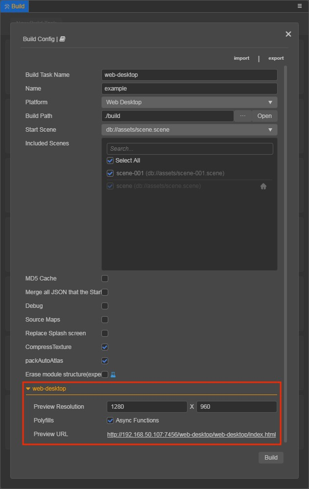
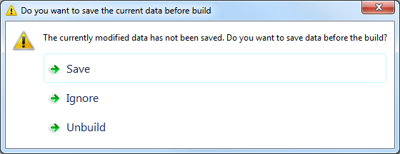
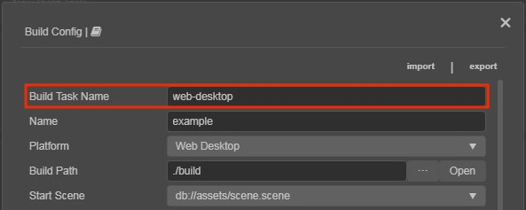
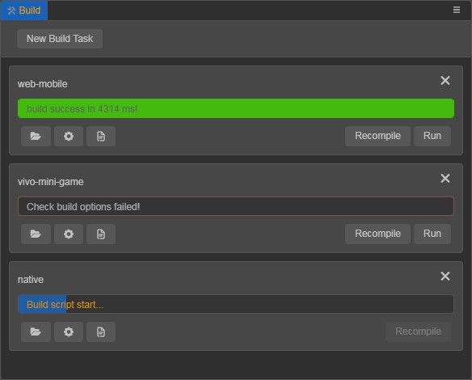
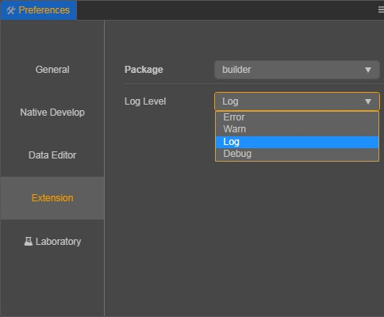
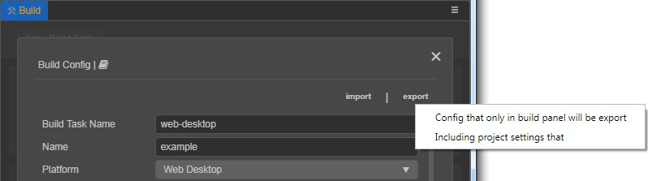

About the Build Panel
Click Project -> Build in the main menu or use the shortcut Ctrl / Cmd + Shift + B to open the Build panel. If multiple build tasks are added at the same time, the editor will automatically start building the next task after the current platform's build task is completed in the order in which it was added.
Platform Plugin
Each platform's build will be embedded in the Build panel as a separate plugin, with platform related options placed in a collapsible section (e.g. the Web Desktop in the figure below).

New Build Task
Click the New Build Task button at the top right of the Build panel to open the build options configuration panel. After the options are configured, click Build.
Make sure the content in the Scene panel is saved before you build. If it is not saved, when you click on the Build button, a prompt will pop up asking: Do you want to save the current data before build?. You can choose Save, Ignore or Unbuild. If Save / Ignore is selected, the build will continue, and if Unbuild is selected, a record of cancelled builds will be generated.
Note: There is no point in executing a build if there is no scene in the project, so projects without a scene are not allowed to add build tasks.

Build Task Name
Build Task Name is the name of the release folder generated after the build. It is not modified by default. If the same platform performs multiple builds, the suffix -001, -002, -003 and so on will be added to the original Build Task Name. If you want to overwrite an old release package, simply manually change the Build Task Name back to its original name.

Note: Cocos Creator 3D uses the Platform name as the name for the release package generated after the build, and overwrites the original package with each build.
Note: Cocos Creator 3D uses the Build Task Name as the name of the release package that is generated after the build, and a new release package is generated with each build. If you want to overwrite the original release package, you can manually modify the Build Task Name to match the original release package name.
Build Progress
After clicking Build, you can monitor the current build task progress in the Build panel. If the build is successful, the progress bar is shown in green, and the time of the actual build is output. Sometimes, especially a first build, the engine will be slow to compile, please be patient. If the build fails, the progress bar is shown in red.

Run
Currently, most platforms can directly click the Run button in the Build panel to preview the effect of the project after the build is complete. If there is no Run button, it means that the current platform does not support run in the editor, please refer to the release document of the relevant platform for details.
Build Log
Because the build process generates so many log messages, by default only error log are printed to the editor's Console panel. There are several ways to view all log information:
Open Build DevTools
Click Developer -> Open Build DevTools in the menu bar to see all the log information printed during the build, including the call stack.
Log Level
Click Preferences -> Extension in the menu bar, set Package to
builder, and then set the log type to output to the Console panel in Log Level.
Log File
The editor will record the error log generated during each build, which can be viewed by clicking the
 button under build task in the Build panel. The log file is stored in the project's
button under build task in the Build panel. The log file is stored in the project's temp/build-logdirectory and can be attached when you send feedback to the forum on build related issues.
Adjust the build options configuration
The Build panel has a  button below the build task, which can be clicked to see or adjust the configuration of the previous build options. Click the Recompile button after the adjustment is complete, the generated release package will directly overwrite the original.
button below the build task, which can be clicked to see or adjust the configuration of the previous build options. Click the Recompile button after the adjustment is complete, the generated release package will directly overwrite the original.
The information about the completed build task will be saved in the profiles/packages/build.json file of the project. As long as the source file of the corresponding build task is not deleted, either in the Build panel or directly deleted in the project directory, you can view the build options configuration of the previous build after reopening the editor, as well as to run and preview again.
Note: The
Export / Import
Export
The Export option at the top right of the Build panel exports the current configuration of build options to a JSON file. This mainly facilitates building from the command-line and sharing the configuration of build options within the same project. The exported configuration of build options are platform-specific. For developers who use the command line to build, you can directly use the JSON configuration file as the configPath of the command-line build options.

Import
The Import option reads JSON configuration file into the Build panel for developers to share build options configuration.
Recompile
If you want to adjust the configuration of build options after the project is built, or if you want to recompile the project after a bug fix. There are following two ways:
Option 1: use the Recompile button at the bottom right of the build task, in the Build panel. This option will directly recompile using the previous configuration of build options.
Option 2: use the button at the bottom of the build task in the Build panel. Click the button to enter the Build panel and you can see a Recompile button. For details, see Adjust the build options configuration in the upper part of the documentation.